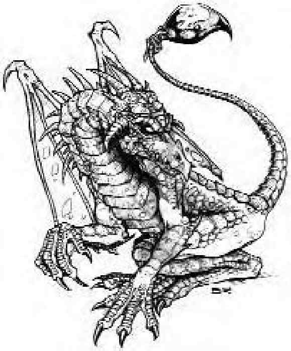

真龙是有翅膀，长的像蜥蜴的古代生物，他们的体型、力量和魔法能力广受敬畏，最年长的龙是世界上最强的生物之一。
已知的真龙（相对于其他龙类生物）可分为两类：五色龙和金属龙。五色龙包括黑龙、蓝龙、绿龙、红龙和白龙，全部都穷凶极恶。金属龙包括黄铜龙、青铜龙、赤铜龙、金龙和银龙，他们都属于善良阵营，高贵而受到智者尊崇。
所有的真龙都会随着年纪增长而获得更多的能力和更强的力量（其他龙类生物则否）。他们的身长从孵化时的数英尺，到太古龙的上百英尺都有。个别真龙的体型因种类和年纪而异。
虽然真龙是令人畏惧的掠食者，但在必要时也会觅食腐肉，饿到极点时什么东西都吃。龙的代谢系统就像效率极高的熔炉，连无机物都能消化掉。有些龙甚至还喜欢上无机口味。
虽然彼此的目标和想法依种类而不同，但龙的共通点就是贪婪。喜欢积聚财宝，搜集成堆的钱币，并尽可能的搜刮宝石、珠宝和魔法物品。拥有大批收藏的龙不愿意离开宝藏太久，通常只有巡视附近区域或觅食时才会离开巢穴。对龙而言，财宝永远也不嫌多，不仅看起来赏心悦目，龙还喜欢沉浸在财宝闪耀的光辉中，把宝藏堆成适合自己身形的床铺。当成长到太古龙时，所积累的宝藏可能包括数百枚的宝石和钱币。所有的龙都通晓龙语。
龙的年龄表| 时期 | 年龄 (年) |
|---|---|
| 1 雏龙 | 0-5 |
| 2 幼龙 | 6-15 |
| 3 少年龙 | 16-25 |
| 4 青少年龙 | 26-50 |
| 5 青年龙 | 51-100 |
| 6 成年龙 | 101-200 |
| 7 壮年龙 | 201-400 |
| 8 老年龙 | 401-600 |
| 9 极老龙 | 601-800 |
| 10 古龙 | 801-1000 |
| 11 上古龙 | 1001-1200 |
| 12 太古龙 | 1201以上 |
| 体型 | 占用空间／可触距离* | 1啮咬 | 2爪抓 | 2翼击 | 1尾巴拍击 | 1碾压 | 1扫尾 |
|---|---|---|---|---|---|---|---|
| 超小型 | 2.5英尺／0英尺（啮咬时5英尺） | 1d4 | 1d3 | ― | ― | ― | ― |
| 小型 | 5英尺／5英尺 | 1d6 | 1d4 | ― | ― | ― | ― |
| 中型 | 5英尺／5英尺（啮咬时10英尺） | 1d8 | 1d6 | 1d4 | ― | ― | ― |
| 大型 | 10英尺／5英尺（啮咬时10英尺） | 2d6 | 1d8 | 1d6 | 1d8 | ― | ― |
| 超大型 | 15英尺／10英尺（啮咬时15英尺） | 2d8 | 2d6 | 1d8 | 2d6 | 2d8 | ― |
| 巨型 | 20英尺／15英尺（啮咬时20英尺） | 4d6 | 2d8 | 2d6 | 2d8 | 4d6 | 2d6 |
| 超巨型 | 30英尺／20英尺（啮咬时30英尺） | 4d8 | 4d6 | 2d8 | 4d6 | 4d8 | 2d8 |
| *龙的啮咬攻击可触距离与体型大一级的龙相同，其余的攻击则依原本体形的标准可触距离。 | |||||||
| 龙的体型 | 直线*（长度） | 锥状**（长度） |
|---|---|---|
| 超小型 | 30英尺 | 15英尺 |
| 小型 | 40英尺 | 20英尺 |
| 中型 | 60英尺 | 30英尺 |
| 大型 | 80英尺 | 40英尺 |
| 超大型 | 100英尺 | 50英尺 |
| 巨型 | 120英尺 | 60英尺 |
| 超巨型 | 140英尺 | 70英尺 |
| *直线喷吐攻击的高度与宽度皆为5英尺。 **锥状区域的高度与宽度皆与长度相同。 | ||
龙使用强而有力的爪子和利齿来攻击敌人，依不同类别也会使用喷吐攻击或特殊的物理攻击。龙喜欢在空中进行攻击，先保持距离用远距攻击削弱敌人之后再靠近。成熟精明的龙善于估计对手实力，先解决最危险的敌人（或是避开最厉害的对手，先解决较弱的敌人）。
翼击：龙可以使用翅膀挥击对手，即使在飞行时也可以。翼击造成表中列出的伤害再加上力量调整值的一半（无条件舍去）。翼击属于次要武器。
尾巴拍击：龙每轮可用尾巴拍击一名对手，造成表中列出的伤害再加上1.5倍龙的力量调整值（无条件舍去）。尾巴拍击属于次要武器。
碾压（特异）：这种特殊攻击让超大型以上的龙可以跳起或从飞行中落在对手身上，用整个身体来碾压对方。这只对体型比自己小3级以上的对手有效（对体型较大的敌人，仍然可以进行正常的闯越或啮咬攻击）。碾压攻击能够影响的生物数目，视龙的体能够压到多少生物而定。在影响范围内的生物必须通过反射检定（DC与龙的喷吐攻击相同），否则就被压制。除非龙将身体移开，否则在下一轮会造成敲击伤害。如果龙选择继续压制，则视同一般的擒抱攻击。被压制的对象每轮都会遭受碾压伤害，直到逃脱为止。碾压攻击造成表中列出的伤害再加上1.5倍龙的力量调整值（无条件舍去）。
扫尾（特异）：体型达巨型的龙，能以标准动作使用尾巴横扫对手。扫尾的影响范围是以龙所占用空间任意方向的边缘交界处为中心，半径30英尺的半圆形（超巨型的龙半径为40英尺）。在其横扫范围内的生物，如果体型比龙小4级以上，会遭受表中列出的伤害再加上1.5倍龙的力量调整值（无条件舍去）、被影响的生物通过反射检定则伤害减半（DC与龙的喷吐攻击相同）。
啮咬：视为擒抱。龙通常不爱用啮咬攻击，但他们的碾压攻击与“攫取”专长仍可使用一般擒抱规则。若龙通过“专注”检定，则它在进行擒抱时仍可使用喷吐攻击、类法术能力与超自然能力。
喷吐攻击（超自然）：进行喷吐攻击是标准动作。龙每次进行喷吐攻击之后，须等待1d4轮才可再次进行喷吐攻击。即使有超过一种的喷吐攻击，仍然是每1d4轮才能进行一次。喷吐攻击会从龙的口中喷出，从龙口延伸往它所选定的方向，影响范围如下表所示。若喷吐攻击会造成伤害，则范围内的生物只要成功通过反射检定（DC=10+龙生命骰的一半+龙的体质调整值），所受伤害便可减半。若喷吐攻击并非直接造成伤害，则其DC判定规则均相同，但所造成影响请参照各叙述说明。喷吐攻击有两种基本形态：直线或锥状。龙的体型大小与喷吐攻击的影响区域有关，请参照下表。
威势（特异）：青年龙或更老的龙在攻击、冲刺或飞行时，仅凭其展现的气势就能够让“龙的年龄层x30英尺”范围内，所有生命骰较它低的对手感到仓皇不安。受到影响的生物必须进行意志检定（DC=10+龙生命骰的一半+龙的魅力调整值）、通过检定的生物在24小时内不受同一条龙的“威势”影响，若检定失败，则生命骰4以下的生物会陷入慌乱状态4d6轮，生命骰5以上的生物则会陷入颤栗状态4d6轮。龙不受彼此之间的威势影响。
法术：龙能和术士一样施展法术，等级如说明中所述、魅力值高也可以获得额外法术。有些龙也可以施展牧师法术或牧师领域的法术。
类法术能力：龙的类法术能力视其年龄和种类而定，可拥有该年龄及之前各年龄的所有能力。施法者等级为年龄层或术士施法者等级两者中较高者，豁免检定的DC=10+龙的魅力调整值+法术等级。除非另有注明，所有的类法术能力每天只能施展一次。
伤害减免：青年龙或更老的龙具有伤害减免能力，其天生武器在计算伤害减免时视同魔法武器。
免疫（特异）：龙对“睡眠术”与麻痹免疫。无论年龄大小，每种龙都额外对于某些攻击方式免疫，详见各种类说明。
法术抗力（特异）：随着龙的年龄增长，对法术或类法术能力的抗力也会提高，详见各种类说明。
替代视觉（特异）：龙可以感知到60英尺内生物的正确位置，龙看不见的生物对龙仍具有完全隐蔽。
感官异常灵敏（特异）：龙在昏暗照明下视力比一般人好4倍，在一般光线下视力比人好2倍。他们还具有120英尺黑暗视觉。
技能：龙的技能点数为（6+智力调整值，最少为1）x（生命骰+3）。大部分的龙会尽可能选取下列技能直到最大级数：聆听、搜索、侦察。剩下的技能点数通常用在专注、交涉、脱逃、威吓、知识（任意）、察言观色和使用魔法装置，每一技能级数耗费一点技能点数。这些技能都视为龙的本职技能（每种龙都还有其他的本职技能，详见各种类说明）。
五色龙和金属龙是强壮的飞行生物，可以快速飞越很远的距离。龙的大陆移动速度与其飞行速度成正比，如下表。
| 龙在大陆移动时的飞行速度 | ||||
|---|---|---|---|---|
| ―― | 100英尺 | 150英尺 | 200英尺 | 250英尺 |
| 一小时 正常速度 | 15英里 | 20英里 | 30英里 | 40英里 |
| 急行 | 24英里 | 40英里 | 60英里 | 80英里 |
| 一天 正常速度 | 120英里 | 160英里 | 240英里 | 320英里 |
龙比其它生物更不容易因大陆移动而疲倦，如果龙采用急行或强行军，每两小时（而非一般的小时）才需检查一次非致死伤害（见《玩家手册》166页说明）。
龙的社会结构虽然所有的龙在数万年前都同出一源，时至今日各品种都各自为政，只有在危急存亡之秋，例如面对强力的异种威胁，才有可能互相合作。善良阵营的龙不会和邪恶阵营的龙合作，中立阵营的龙则有可能与任一阵营合作，金龙偶尔会与银龙在一起。
邪恶阵营的龙相遇时，通常会为了保护自己的地盘而相斗。善良阵营的龙就比较宽大，尽管他们的领域观念也很强，但通常会试着用比较和平的方式来解决问理。
龙依照个别需求和个性来决定繁衍策略，以确保血脉的延续，不受发生在父母或父母巢穴的事情影响。青年期的龙，尤其是邪恶阵营或智力较低的龙，会在乡间四处产卵，每次产下1d4+1个卵，这些后代必须自己保护自己。刚孵化的小龙，通常为青少年或更年幼，会聚集在一起直到有能力建立自己的巢穴为止。
年龄较大且智力较高的龙，会由一对配偶加上1d4+1只小龙组成家庭。结成配偶的龙通常是成年或壮年龙，其后代可能是雏龙（百分骰01-10）、幼龙（百分骰11-30）、少年龙（百分骰31-50）、青少年龙（百分骰51-90）或是青年龙（百分骰91-100）。当小龙成长到青年龙（少数则早在青少年龙时），会离开父母建立自己的巢穴。
结成配偶的龙一旦超过壮年期，通常会因为对宝藏的渴望而分开，各自独立。较老的雌龙仍会继续交配并产卵，但双亲只有其中之一会留在巢穴照顾小龙。较老的雌龙通常会产生数窝的卵，其中一窝自己照顾，另一窝交给配偶，其余的任其自生自灭。有时雌龙会将卵或雏龙放到非龙类的巢穴里寄养。
龙皮：防具工匠可以用龙皮制造防具或盾牌，成品为精制品（见《地下城主指南》第284页关于特殊原料中龙皮的说明）。